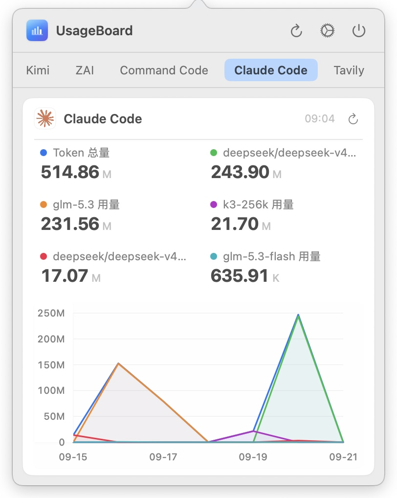
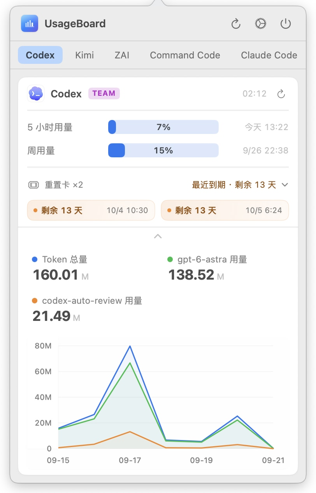
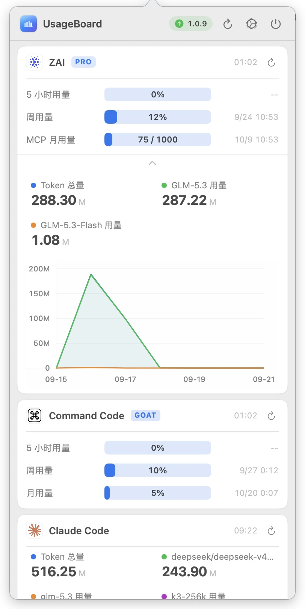
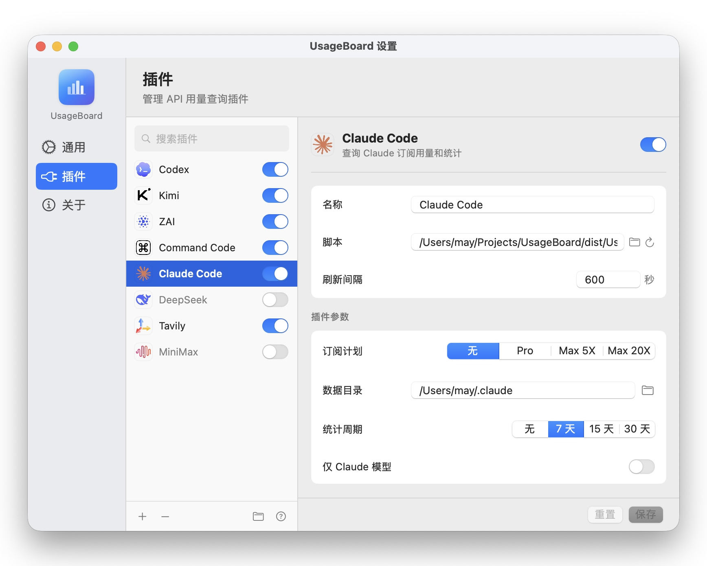

从刷新调度到展示形式，每一处都为菜单栏场景打磨
每个数据源都是独立 Python 插件，参数表单从脚本元数据自动生成，几分钟即可接入新服务。
Token 统计支持折线图与堆叠直方图切换，用量趋势和模型分布一眼看清。
卡片支持分组堆叠与标签页两种布局，拖拽排序，按你的习惯组织面板。
每个插件独立设置刷新间隔；系统休眠自动暂停，唤醒后继续，不浪费任何一次请求。
浅色、深色或跟随系统即时切换，插件图标随主题自动适配，离线可用。
后台定时检查新版本，菜单栏胶囊提示，面板内一键下载安装。
真实的菜单栏弹层与设置界面




覆盖主流模型与服务，也可以通过插件协议接入任何数据源
想接入自己的服务？查看 插件开发文档，一个 Python 脚本即可。
需要 macOS 13.0 或更高版本
通过 Homebrew 安装
brew install --cask marsmay/usageboard/usageboard
首次打开时若提示"无法验证开发者"，在"系统设置 → 隐私与安全性"中点击"仍要打开"，或执行：
xattr -cr /Applications/UsageBoard.app
在设置中添加并启用插件，填入对应服务的凭据，用量即刻出现在菜单栏。